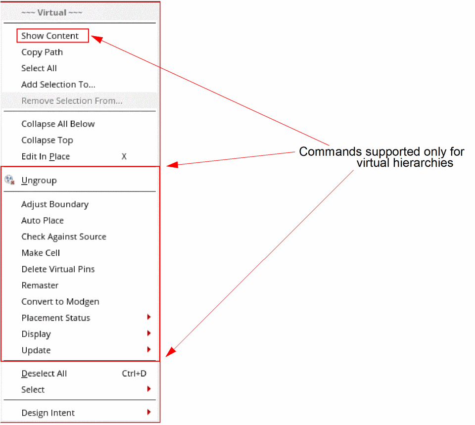

Virtual Hierarchy Editing Commands in Shortcut Menu
The Design Planning and Analysis tool provides quick access to some useful commands through the shortcut menu of a virtual hierarchy and a virtual hierarchy clone.
To access the shortcut menu of a virtual hierarchy:
-
Right-click a virtual hierarchy in the Navigator assistant or the layout canvas.
The Virtual shortcut menu is displayed. The shortcut menu provides some generic commands supported in Virtuoso Layout Suite EXL, in addition to a set of commands that are supported only for virtual hierarchies.

Return to top